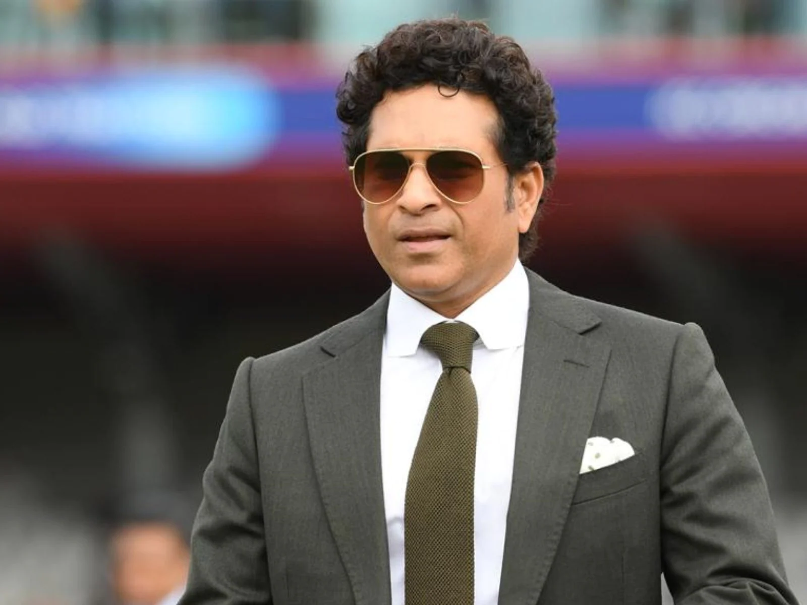

India is a country where cricket is watched by many people. The 1983 Cricket world cup changed the perspective of many people in India. For others, cricket might just be a sport in which one team loses and the other wins but for us Indians cricket is everything and it has been followed by some crazy fans as a religion. We often hear the term ‘Cricket is a religion in India and Sachin is God’. No better statement can justify the status of cricket and Sachin Tendulkar in India. Though there were many great cricketers before Sachin Tendulkar, his transition story has inspired many people to work on their dreams.India is a country where cricket is watched by many people. The 1983 Cricket world cup changed the perspective of many people in India.
For others, cricket might just be a sport in which one team loses and the other wins but for us Indians cricket is everything and it has been followed by some crazy fans as a religion. We often hear the term ‘Cricket is a religion in India and Sachin is God’. No better statement can justify the status of cricket and Sachin Tendulkar in India. Though there were many great cricketers before Sachin Tendulkar, his transition story has inspired many people to work on their dreams.India is a country where cricket is watched by many people. The 1983 Cricket world cup changed the perspective of many people in India. For others, cricket might just be a sport in which one team loses and the other wins but for us Indians cricket is everything and it has been followed by some crazy fans as a religion. We often hear the term ‘Cricket is a religion in India and Sachin is God’. No better statement can justify the status of cricket and Sachin Tendulkar in India. Though there were many great cricketers before Sachin Tendulkar, his transition story has inspired many people to work on their dreams.
